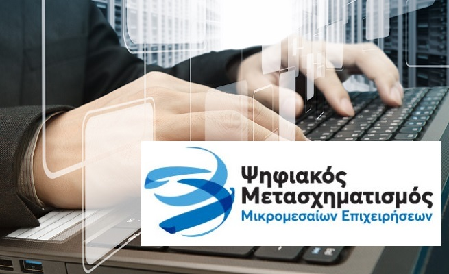

Ψηφιακά Εργαλεία ΜΜΕ: Έναρξη
διαδικασίας έκδοσης επιταγών
(vouchers) για το Πρόγραμμα

Σήμερα, Δευτέρα 30 Ιανουαρίου 2023, πρόκειται να εκκινήσει σταδιακά η
διαδικασία έκδοσης επιταγών (vouchers) από τους δικαιούχους του
Προγράμματος Ι “Ψηφιακά Εργαλεία ΜΜΕ” ξεκινώντας από την Κατηγορία 1.
Για την έκδοση των επιταγών του, ο κάθε δικαιούχος θα πρέπει να
εισέλθει στον λογαριασμό του (στην Ηλεκτρονική Πλατφόρμα Υποβολής
Αίτησης Χρηματοδότησης) και να επιλέξει το πεδίο “Έκδοση & Διαχείριση
Επιταγών”, ακολουθώντας προσεκτικά τις οδηγίες που εμφανίζονται στην
οθόνη.
Επισημαίνεται ότι:
-
Οι δικαιούχοι δύναται να εκδίδουν μία ή περισσότερες επιταγές, με
αθροιστική αξία (όλες μαζί) έως το συνολικό εγκεκριμένο ποσό ενίσχυσής
τους.
-
Η δυνατότητα έκδοσης επιταγών θα είναι ενεργή καθ’ όλη τη διάρκεια του
Προγράμματος. Προτείνεται, ως καλή πρακτική, οι δικαιούχοι να εκδίδουν
τις επιταγές τους, αφού έχουν επιλέξει προϊόν προς αγορά και γνωρίζουν
την αξία τιμολόγησης και αντίστοιχης επιχορήγησης (ανά τιμολόγιο).
-
Κατά τις πρώτες ημέρες της έκδοσης των επιταγών, ο χρόνος για την
επεξεργασία του αιτήματος αυτού ενδέχεται να υπερβαίνει τις δύο ημέρες.